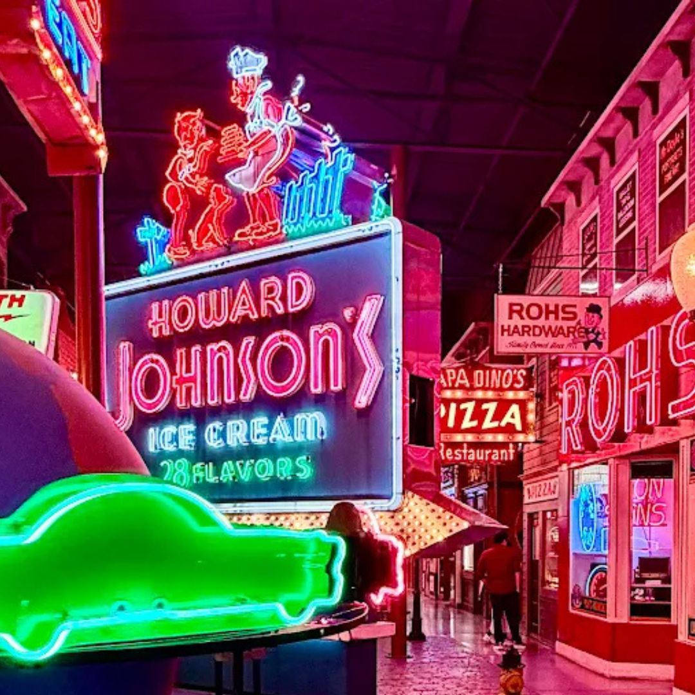
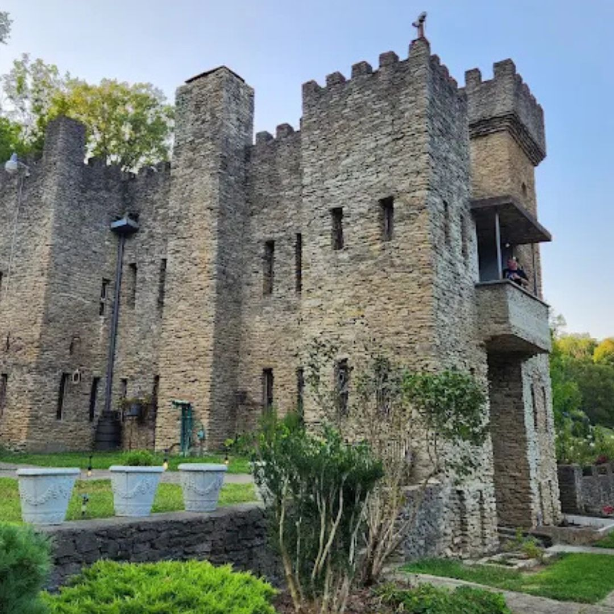
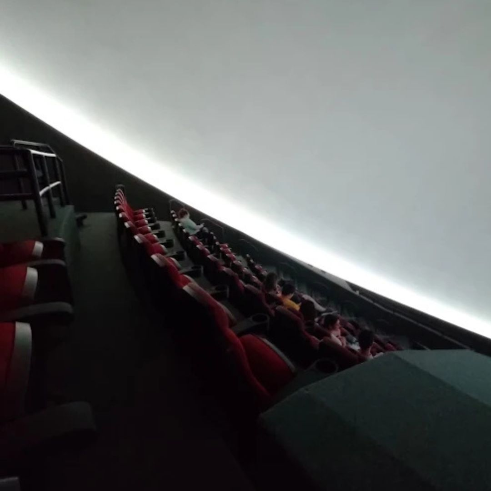
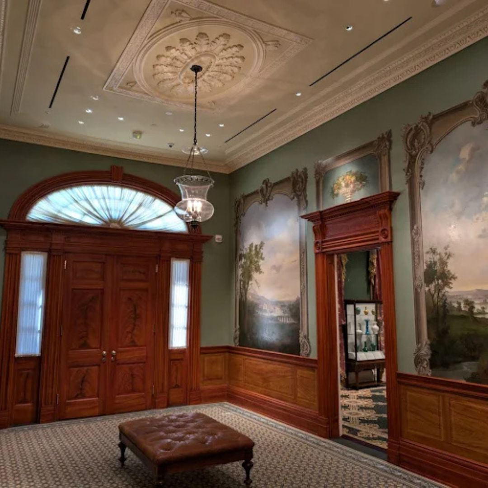
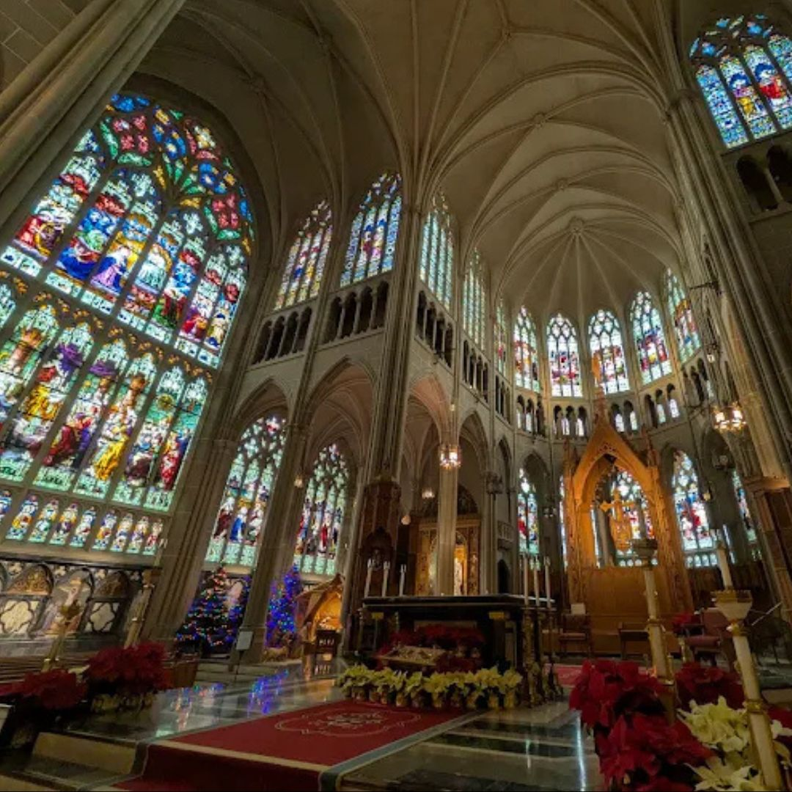

View
See in neon @ American Sign Museum
Walk through a century's worth of sign history.

Travel back in time @ Loveland Castle
Go inside and find out the story of this one-of-a-kind historical landmark.

See a movie @ OMNIMAX Theater
Volcanoes, space, dinosaurs and more -- they've got a show for everyone in this amazing 360 theater.

Peruse and admire @ Taft Museum of Art
Take your time to look through this unique museum, curated by a Cincinnati local many years ago.

Bask in awe @ Cathedral Basilica of the Assumption
A breathtaking view of stained glass and expansive, candle-lit ceilings can be found in this stunning cathedral.
